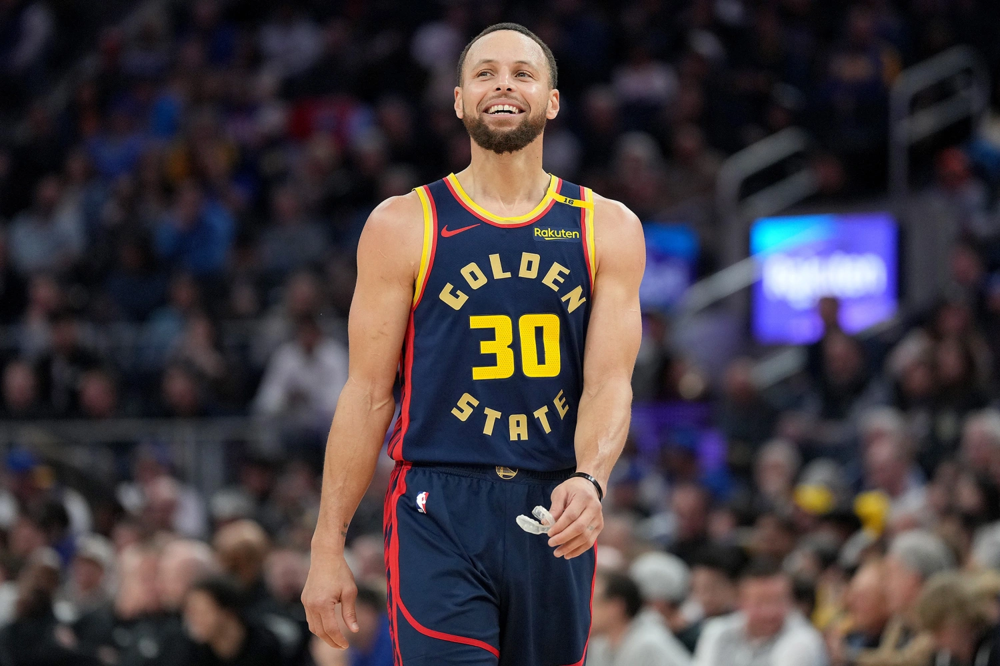
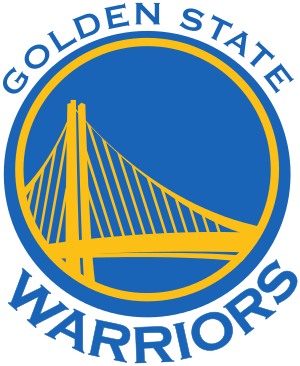

Stephen Curry nasceu em 1988 e revolucionou o basquete moderno com sua habilidade de arremessos de longa distância. Escolhido pelo Golden State Warriors no Draft de 2009, ele rapidamente se tornou o principal jogador da franquia. Sua precisão nos arremessos de três pontos mudou completamente a forma como o jogo é jogado na NBA.
Curry é múltiplo campeão da liga e já conquistou prêmios de MVP, incluindo uma temporada histórica em que foi eleito de forma unânime. Seu estilo combina rapidez, controle de bola e uma capacidade de pontuar de qualquer ponto da quadra, tornando-o um dos jogadores mais influentes da história do esporte.
Golden State Warriors
